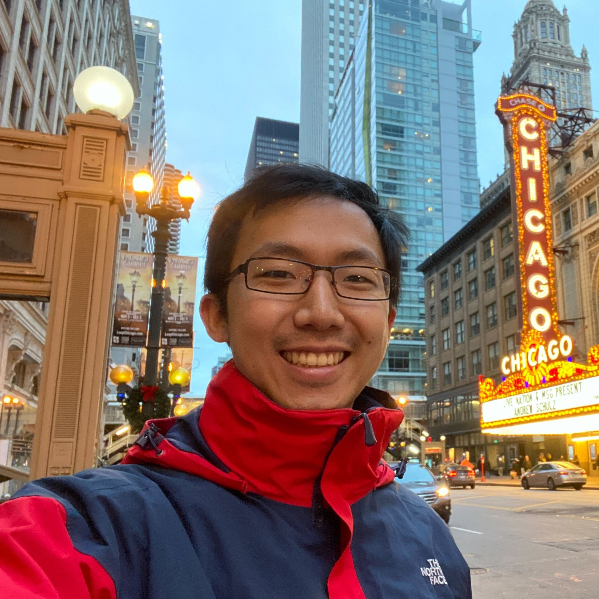

|
Jeffrey Hu Hi, I'm Jeff! I'm an aspiring PhD student for Fall 2025. Previously, I received M.Sc. and B.Sc. degrees in Electrical Engineering and Computer Science at MIT. |
 |
{kind=link}
ResearchI'm interested in machine learning, computer vision, computer graphics. |

|
gsplat: An Open-Source Library for Gaussian Splatting
Vickie Ye, Ruilong Li, Justin Kerr, Matias Turkulainen, Brent Yi, Zhuoyang Pan, Otto Seiskari, Jianbo Ye, Jeffrey Hu, Matthew Tancik, Angjoo Kanazawa JMLR, 2024 project page / arXiv / code gsplat is an open-source library designed for training and developing Gaussian Splatting methods. It features a front-end with Python bindings compatible with the PyTorch library and a back-end with highly optimized CUDA kernels. gsplat offers numerous features that enhance the optimization of Gaussian Splatting models, which include optimization improvements for speed, memory, and convergence times. Experimental results demonstrate that gsplat achieves up to 10% less training time and 4x less memory than the original implementation. Utilized in several research projects, gsplat is actively maintained on GitHub. Source code is available at this https URL under Apache License 2.0. We welcome contributions from the open-source community. |
|
The template is stole from Jon Barron. |